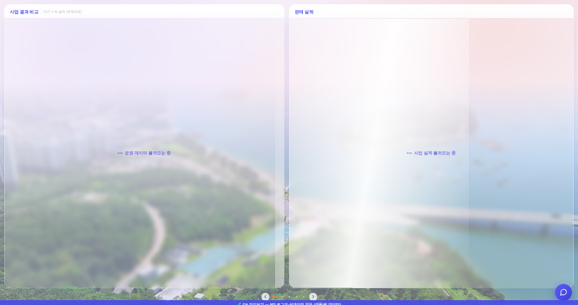
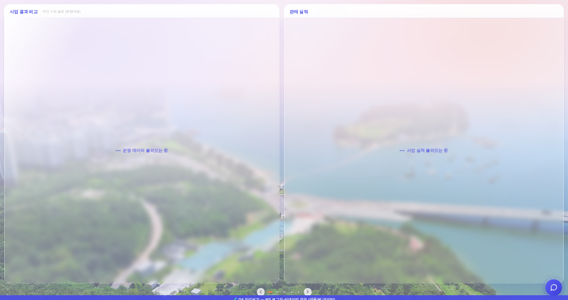
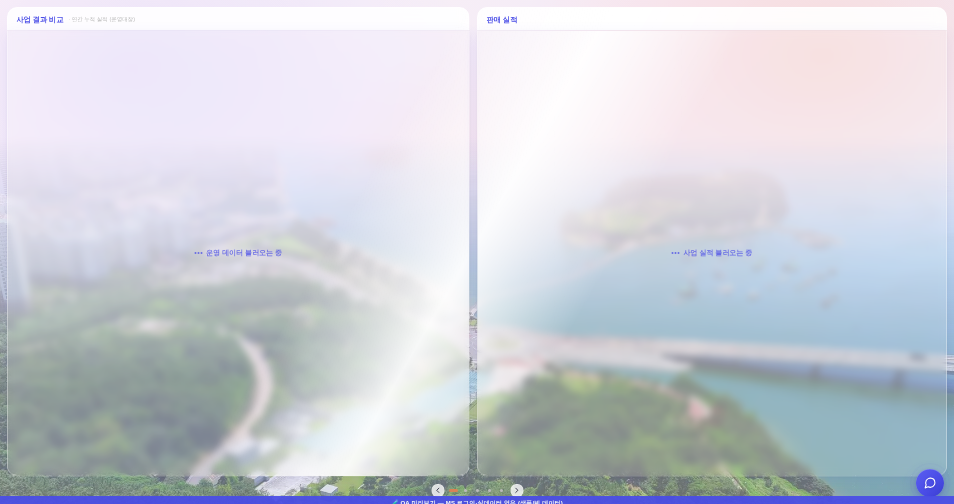
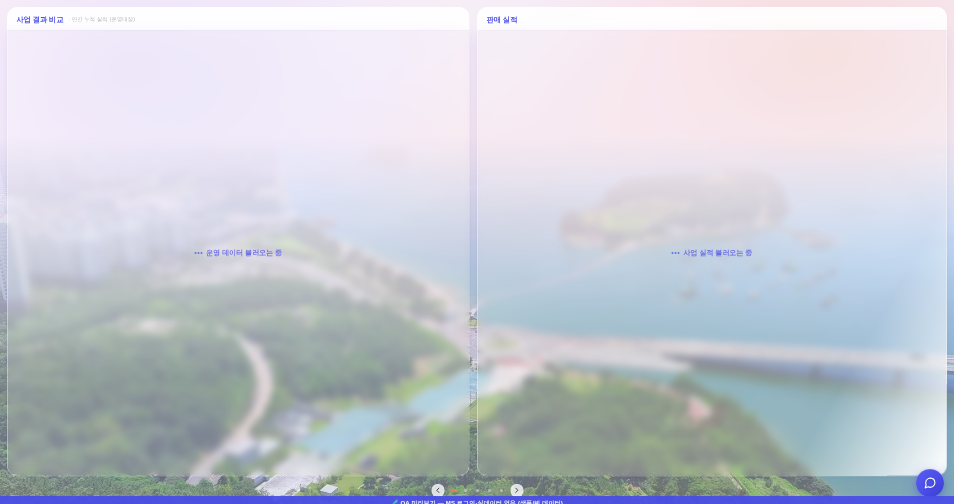

운영자 지시 260806-16 「이거 11시 방향에서 5시 방향으로 쓸어내리게 해주고, 이징되게 해줄 수 있어? 10시 방향에서 4시 방향으로 할게」 + 「16대 9 화면이 더 많으니까」 ·
앞 단계 = 260806-12(빗살 = 카드 전면) · 260806-14(양면 동시 로딩 = 펼침 기준) · 화면 = ?qa=admin 목데이터 · 1920×1080.
| 축 | 각(수평 기준) |
|---|---|
| 시계 10시 → 4시(지시) | 30.00° 아래 |
| 16:9 화면 모서리 대각 | 29.36° 아래 |
| 시계 11시 → 5시(첫 안) | 60.00° 아래 |
→ 구현 = linear-gradient(120deg, …)(정북 기준 120° = 수평에서 30° 아래). 16:9 대각과 0.6° 차라 운영자 단서(「16대 9가 더 많으니까」)와 사실상 일치한다.
120deg 한 곳이고, translate는 그 축으로의 투영만 일하면 된다.구판 여정 = translateX(-120% → 400%). 곡선의 느린 양끝이 화면 밖에서 소모되고, 화면 안에서는 가장 빠른 중간 구간만 지나가 등속으로 보였다.
| 여정 | 화면 안 비중 | 구간별 이동 px(20등분) 최소/최대 | |
|---|---|---|---|
| 전 | −120% → 400%(자기 폭) = 5.2배 | ≈ 절반 이하 | 화면 안 구간은 사실상 등속 |
| 후 | ±33%(기준 사각 2배 판) = 축 투영 ±0.66 L | 여정 전체 = 보이는 구간 | 11 / 212 (19배) |
0.866·W + 0.5·H(120deg). 띠가 양끝 밖으로 완전히 빠지는 데 필요한 최소 여정이 0.62 L이라 0.66 L은 그보다 딱 한 뼘 크다.ease-in-out 그대로(이 규칙에 이미 있던 값 · 신규 창작 0). 여정을 줄인 것만으로 좌우 대칭 가감속이 눈에 남는다.cubic-bezier(0.4,0,0.2,1)도 대봤지만 그건 도착·안착용이라 앞이 빠르고 뒤가 늘어져(실측 t=50%에 이미 여정의 80% 지점) 오른쪽 아래에서 멎어 보인다 — 연속 반복인 스윕엔 대칭 곡선이 맞다. 바꾸려면 이 한 줄만 갈면 된다.구판은 「폭 34% 세로 띠」였다. 대각 띠를 그 안에 담으면 띠의 양 끝이 판 모서리에서 잘린다. → 판을 기준 사각의 2배로 깔고 띠는 그라데이션 정지점으로 만든다.
| 값 | 구현 | 뜻 |
|---|---|---|
| 판 자리·크기 | left/top = −(기준 사각)/2 · 2배 | 기준 사각을 가운데 두고 사방으로 한 칸씩 여유 = 여정 끝에서도 띠가 안 잘린다 |
| 띠 두께 | 44% ~ 56%(판의 12%) | = 기준 사각 L의 0.24배 ≈ 구판 「폭 34%」와 같은 체감 두께 |
| 여정 | translate ±33%(판 기준) | = 기준 사각의 ±0.66배 → 축 투영 0.66 L(가로세로 비와 무관하게 성립) |
_ldSweepSpan이 넣는 기준 사각 앵커(--sw-x/y/w/h)가 이제 한 열만 로딩일 때도 필수가 됐다.
실측 = 한 열 로딩 시 머리줄·박스의 판 1종(492,−393,1876,1872) · 양면 로딩 시 네 칸 전부 1종(−918,−393,3756,1872 · duration 2.45s = 펼침 배수만큼).양면 동시 로딩 화면. 후는 왼쪽 위 → 가운데 → 오른쪽 아래로 대각으로 내려간다.




실앱 CSS 계승본. 후는 --sw-*를 실앱 _ldSweepSpan과 같은 식으로 이 페이지에서 실측해 넣는다(리사이즈 추종).
전 — 세로 띠 · 가로 이동 · 등속처럼 보임
후 — 10시→4시 대각 · 가감속이 보임
260806-12_로딩스윕_창전면_전후.html · 260806-14_양면스윕_펼침기준_전후.html.